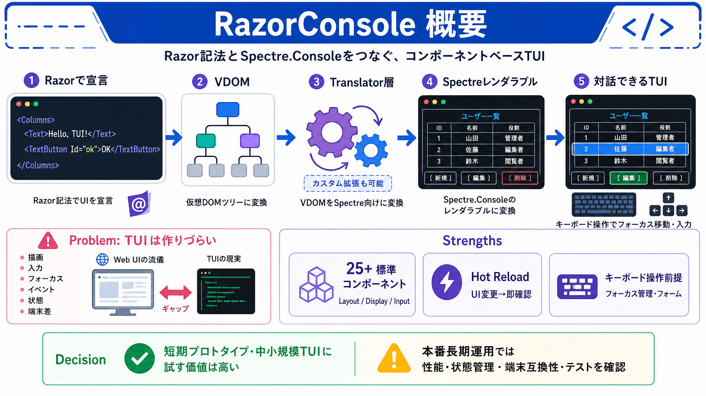

Webの流儀
コンポーネント / バインディング / ライフサイクル
（Web UIの設計）

RazorConsoleは、.NETのRazor記法とSpectre.Consoleの描画力をつなぎ、キーボード操作まで含むリッチなTUI（テキストUI）をコンポーネントベースで素早く作れる仕組みです。
ターミナルUIは見た目だけでなく、入力・フォーカス・イベント・状態の扱いが増えるほど実装が重くなります。
RazorConsoleはVirtual DOM（VDOM）をSpectre.Consoleのレンダラブルへ変換する設計を採用しています。
標準だけで足りなければ、カスタムトランスレータでVDOM→Spectre変換ルールを追加して挙動を拡張できます。
レイアウト、表示、入力、ユーティリティなどで25+の標準コンポーネントが用意されており、まず動く雛形を作りやすいのが強みです。
キーボードナビゲーションとフォーカス管理を前提にしたインタラクティブ部品が用意されており、見た目だけで終わらないTUIを狙っています。
Hot ReloadによりUI変更を素早く反映でき、TUIでボトルネックになりやすい見た目調整や挙動確認のサイクルが短くなります。
標準の例（Counterなど）では、<Columns>や<TextButton>のような部品を組み合わせてRazorでUIを組み立てます。
Spectre.Consoleを直接使う場合は表現と描画は作れても、Web的な「構成・イベント・状態」を一貫した形で積み上げるには工夫が必要になります。
提示データ（README中心）だけでは、性能・状態管理・端末互換性・Hot Reloadの境界条件などの判断材料が十分に書かれていません。
短期のプロトタイピングや中小規模のTUI開発には強い候補ですが、本番の長期運用では性能測定・テスト戦略・端末差の吸収を追加確認すべきです。
提示データではdesign-docや例への言及があるため、意思決定の精度を上げるには公式の設計・開発情報を追加で確認してください。
No references found